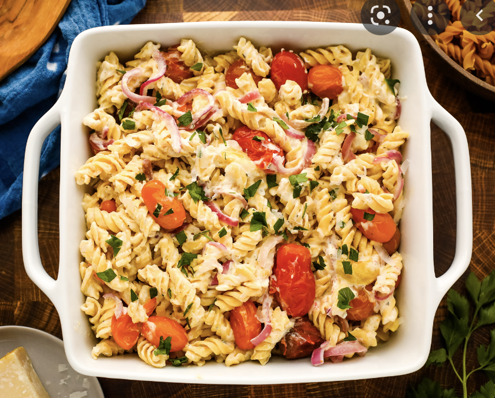

Boursin Cheese Pasta
Return to Main Page

Description
A nice twist on the famous tik tok feta pasta. The boursin cheese really
makes it so much more creamy, and the best part, it's so easy to make!
Ingredients
- Pasta
- Boursin cheese
- Cherry tomatoes
- Olive oil
- Seasonings: Salt, pepper, oregano, chili flakes
Steps
- In a baking pan, combine cherry tomatoes, olive oil, salt, and pepper
- Bake for 30 minutes at 400 degrees
- Boil water, salt it, and put the pasta in
- Take the pan out of the oven and mix all ingredients together,
smash the tomatoes a little bit if you like
- Combine the pasta with the cheese and tomato mixture and serve